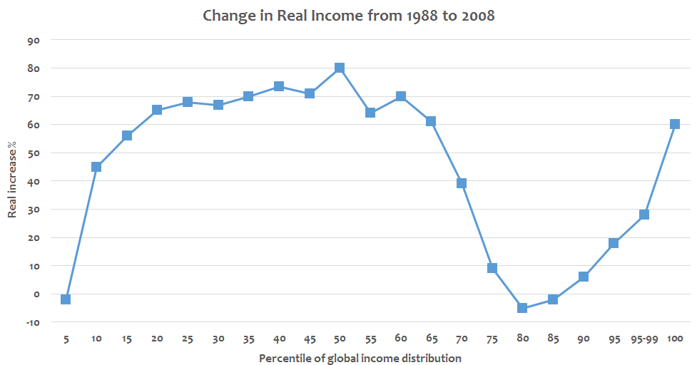
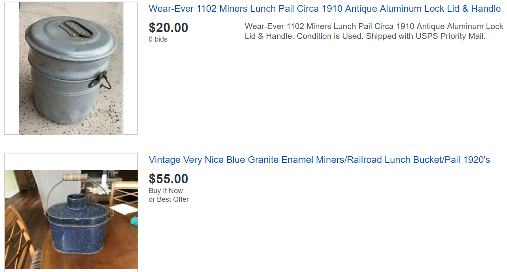

코끼리 그래프와 lunch bucket - "North Country Blues" 가사 해설
게시: 2019-06-06T06:30:02+09:00
경쟁력 있는 해외 저가품에 밀려 한나라의 산업이 쇠퇴하는 일은 요즘 흔합니다. 가장 대표적인 것이 미국의 제조업, 특히 철강업이나 조선업 같은 것입니다. 첨단을 달리는 IT 산업에서도 마찬가지입니다. 요즘 인텔을 누르고 잘 나가는 AMD 같은 프로세서 업체는 정작 반도체 공장을 가지고 있지 않습니다. 대부분 대만의 TSMC에서 위탁생산을 하지요. 우리나라 삼성전자도 비메모리 반도체 분야를 키우기 위해 AMD나 IBM과 협업을 늘려나가고 있습니다. 아이폰도 대부분 중국에 공장을 둔 대만업체인 폭스콘에서 생산합니다. 그렇게 더 경쟁력있는 제품 생산을 위해 생산비가 더 싼 곳으로 공장을 옮겨버리는 것을 오프-쇼어링(offshoring)이라고 하지요.

(어린 왕자가 아니더라도 코끼리가 보여야 정상입니다.)
이런 오프쇼어링은 공장이 빠져나가는 나라의 노동계급에게는 큰 타격을 줍니다. 그러나 이익을 얻는 계급도 있습니다. 그런 결정을 내려서 제품 경쟁력을 끌어올린 경영진 뿐만 아니라, 그렇게 옮겨진 공장에 취직을 한 개발도상국의 노동계급은 큰 이익을 얻게 됩니다. 그래서 생겨난 것이 소위 말하는 '코끼리 그래프'입니다. 전세계 인구의 소득을 가장 적은 1부터 가장 많은 100까지의 스케일로 늘어놓고, 각 소득 분위별로 1980년대와 2000년대 사이의 소득 증가율을 그래프로 그려보면 상아를 높이 쳐들고 있는 코끼리 모양이 나온다는 것입니다. 이 그래프가 뜻하는 바는 간단합니다. 그 사이에 진행된 오프쇼어링 덕분에 소득분위 75~90% 정도의 사람들, 즉 소위 중상위층이라고 하는 사람들이 상대적으로 못살게 되었다는 것입니다. 그래프의 좌측 끝 즉 제일 못사는 사람들은 소득 증가율도 제일 저조하고 그래프의 오른쪽 끝 즉 제일 잘사는 사람들은 소득 증가율이 가장 높습니다. 그건 놀랍지 않습니다만 중상위 계급의 상대적 몰락은 꽤 인상적입니다. 생각해보면 당연할 수도 있습니다. 미국 내 공장에서 일하는 노동자들은 미국 내에서야 중하위 계층일지 몰라도 전세계적 스케일에서 보면 중상위 계층이라고 할 수 있습니다. 그런데 그런 공장들이 대만이나 한국, 일본, 중국, 베트남 등으로 옮겨갔으니 당연히 그쪽 소득이 줄어들고 동아시아쪽 소득이 평균적으로 높아진 것입니다. 그러니까 아마 우리나라 사람들이 코끼리의 등뼈 부분에 해당하는 모양입니다. 그런데 그런 현상이 꼭 1980년대 이후에만 벌어진 것은 아닙니다. 광부란 언제나 거칠고 위험한 직업이고, 그래서 많은 소설이나 노래, 영화 등에서 다뤄졌습니다. 1960년대 사회성 있는 노래 가사로 인기를 끌었던 밥 딜런이 그런 광산을 배경으로 한 노래를 만들지 않았다면 매우 이상한 일이겠지요. 당연히 만들었습니다. 1964년에 만들어진 이 노래의 가사는 역시나 우울합니다. 한줄 요약하면 어느 몰락한 폐광촌의 여인의 신세 한탄 이야기입니다. 경기가 나쁘지 않던 미국 광산촌이 철광석 고갈에다 남미 광산과의 경쟁에서 밀려 몰락해버린 것이 이 노래의 배경입니다. 어떻게 보면 이 노래가 가난한 노동자 계급의 애환과 비극을 그린 것이라고만 볼 수는 없습니다. 지금은 경기가 좋고 잘 나간다고 해도, 어떤 산업 또는 어떤 업종이라도 흥망성쇠가 있기 마련입니다. 가령 폴더폰 잘 만들던 세계적 기업 노키아는 스마트폰의 물결에 망해버렸고, 미국 내 비디오 배급망을 장악하고 있던 블록버스터사는 넷플릭스 같은 스트리밍 서비스에 밀려서 망했습니다. 여러분 각자가 종사하고 계신 산업이나 업종, 혹은 기술 분야도 언제 누구에게 밀려서 망할지 모릅니다. 그러니까 저 폐광촌 여인의 한탄이 꼭 남의 이야기만은 아닌 셈이지요. 가령 이 노래 속의 '동부'로 지칭되는 철강 회사들은 '남미 광산에서는 노동자들이 사실상 공짜로 일한다'며 미국 광부들을 실업자로 만들었지만, 결국 30년도 지나지 않아 자신도 더 값싸고 우수한 한국제 일본제 철강에 밀려서 몰락해 버렸지요.
(한때 아주 잘 나가던 블록버스터 비디오 대여점 체인... 이젠 역사 속으로 사라졌습니다.)
그와는 별도로, 저 노래 속 여인은 오빠가 죽었을 떄도 남편이 실직했을 때도 항상 창가에 앉아서 뭔가를 기다리는 것으로 묘사됩니다. 저는 그게 참 마음이 아프더라고요. 사실 몰락한 광산촌에서 여성의 몸으로 할 수 있는 일이 많지는 않았을 것입니다. 역시 탄광촌을 배경으로 한 에밀 졸라의 소설 '제르미날'에서도, 가난한 광부 가족의 여인들이 돈이 부족하여 상점 주인에게 성매매 등의 비열한 착취를 당하는 장면이 나옵니다. 이 노래 속의 여인도, 광산촌이 몰락한 이후로는 사실상 구걸을 통해서 아이들을 키우는 것으로 보여집니다. 저 노래 속에 나오는 '모여봐요 친구들, 이야기를 해줄게요' 라는 부분에서, '친구들'이란 진짜 친구라기 보다는 외지인들을 이야기하는 것으로 보입니다.
다행인지 필연적인 건지 모르겠지만 광산과는 달리 현대 사회에서는 여자가 할 수 있는 일이 더 많아졌습니다. 결혼한 여성들도 모두 뭔가 직업을 가지고 스스로 경제력을 갖추는 것이 여러가지 측면에서 더 바람직하다고 저는 생각합니다. 물론 그를 위해서는 남성들이 요리와 청소 빨래 등등 집안일을 열심히 해야 하겠지요. 제가 볼 때 '남자가 부엌 들락거리면 안 된다'라는 식의 가정교육을 받고 자란 남성들에게는 미래가 없습니다. 소위 오래된 유교적인 남녀관을 가진 남자들, 가령 며느리가 제삿상도 차리고 시부모님을 모시고 살아야 한다고 생각하는 남자들은 자연도태에 의해 곧 멸종될 것 같아요. 그런 남자와 결혼하려는 여성들이 점점 없어지고 있거든요. 오늘의 영어 한마디는 lunch bucket 입니다. 이건 20세기 초중반까지 노동자 계급에서 주로 들고다니던 도시락통을 말하는 것입니다. 요즘은 이런 양철 도시락통이 사라졌습니다만, lunch-bucket이란 단어가 이젠 '노동자 계급과 관련된' 이라는 뜻의 형용사로 전해지고 있습니다. 물론 이 노래 속에서는 진짜 양철 도시락통을 뜻합니다.

(그 주인들은 어찌 되었는지 모르겠으나 양철 도시락통은 살아남아 저렇게 앤티크로 비싼 값에 팔리고 있습니다...)

이 노래의 원작자인 밥 딜런의 버전보다는 존 바에즈의 1968년 버전이 훨씬 더 아름답습니다. 존 바에즈 버전은 아래 URL에서 감상하세요. https://youtu.be/m0XUfoLkG0o
North Country Blues (북부의 블루스) Come gather 'round friends and I'll tell you a tale Of when the red iron pits ran a-plenty But the cardboard-filled windows and old men on the benches Tell you now that the whole town is empty 모여봐요 친구들 제가 이야기 하나 해줄게요 노천광에 붉은 철광석이 넘쳐나던 시절 이야기에요 하지만 저렇게 창문들은 골판지로 막혀있고 벤치에 노인네들이 앉아있는 것을 보면 이제 마을 전체가 텅 비었다는 걸 댁들도 알 거에요 In the north end of town my own children are grown But I was raised on the other In the wee hours of youth my mother took sick And I was brought up by my brother 제 아이들은 마을 북쪽 자락에서 자랐어요 하지만 저는 다른 쪽 끝에서 자랐지요 제가 아주 어릴 때 엄마가 병에 걸렸거든요 그래서 저는 오빠 손에 자랐어요 The iron ore poured as the years passed the door The drag lines an' the shovels they was a-humming 'Till one day my brother failed to come home The same as my father before him 세월이 흐르면서 철광석도 넘쳐났어요 견인줄과 삽 소리가 쉬지 않고 울렸지요 그러다 하루는 오빠가 집에 오지 못했어요 그 전에 아빠처럼 말이에요 Well, a long winter's wait from the window I watched My friends they couldn't have been kinder And my schooling was cut as I quit in the spring To marry John Thomas, a miner 그 긴 겨우내 저는 창가에서 마냥 기다릴 뿐이었지요 친구들은 제게 정말 따뜻한 온정을 베풀었어요 다음해 봄이 되자 저는 학교를 그만 뒀고 존 토마스라는 어느 광부에게 시집을 갔지요 Oh, the years passed again, and the giving was good With the lunch bucket filled every season What with three babies born, the work was cut down To a half a day's shift with no reason 아, 또 세월이 흘렀고 사는 것은 괜찮았어요 철마다 도시락통엔 음식을 채울 수 있었으니까요 세번째 아기가 태어날 때 즈음 일이 줄었어요 아무 이유도 없이 하루의 절반으로요 Then the shaft was soon shut, and more work was cut And the fire in the air, it felt frozen 'Till a man come to speak, and he said in one week That number eleven was closing 그러더니 갱도 하나가 폐쇄되고 일이 더 줄었어요 동네 분위기도 얼어붙더군요 그러다 외지 사람이 하나 와서 이렇게 말했어요 1주일 안에 제11번 광산은 폐쇄될거라고요 They complained in the East, they are paying too high They say that your ore ain't worth digging That it's much cheaper down in the South American towns Where the miners work almost for nothing 동부에서는 불평을 한다는 거에요 가격이 너무 비싸다고요 그들 말로는 우리 광석은 캐낼 가치가 없대요 저 아래 남미에서는 훨씬 싸다더군요 거기선 광부들이 거의 공짜로 일을 한대요 So the mining gates locked, and the red iron rotted And the room smelled heavy from drinking Where the sad, silent song made the hour twice as long As I waited for the sun to go sinking 그래서 갱도들은 폐쇄되고 붉은 철광산은 황폐해졌어요 그리고 방에서는 술 냄새가 진동했지요 낮고 슬픈 노래 때문에 시간은 훨씬 천천히 가더군요 하루하루가 의미없이 흘렀어요 I lived by the window as he talked to himself This silence of tongues it was building 'Till one morning's wake, the bed it was bare And I was left alone with three children 난 창가에 붙어 지냈고 남편은 혼잣말만 했어요 침묵만 쌓여갔지요 그러다 아침에 보니 침대가 썰렁하더군요 전 아이 셋과 함께 버려진거였지요 The summer is gone, the ground's turning cold The stores one by one they're all folding My children will go as soon as they grow Well, there ain't nothing here now to hold them 여름이 가고 대지는 차가워졌어요 가게들도 하나씩 문을 닫았지요 제 아이들도 어느 정도 자라면 가버릴거에요 여기엔 걔들을 붙잡아둘 것이 아무 것도 없으니까요 작사: Bob Dylan